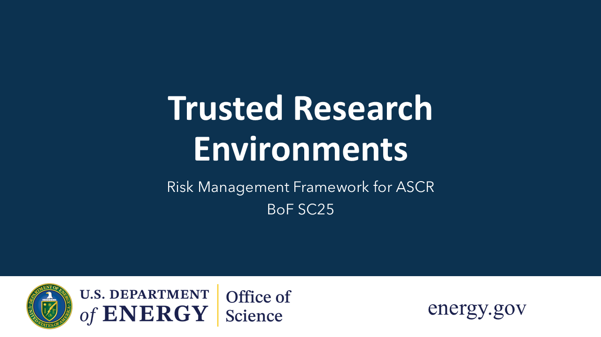

About the TRE Community of Practice (CoP)
We explore the multifaceted aspects of managing risk for research projects involving sensitive data and AI models which depend deeply on supercomputing infrastructures. This risk spectrum spans traditional technical cyber controls as well as policy and sociological (including human factors) risks.
In the context of multi-facility or multi-institutional workflows, our goal is to advance progress in developing secure and trustworthy infrastructures for AI and integrated science. We seek to understand trustworthiness in supercomputing environments from both technical and socio-technical perspectives. Outcomes include building a community of practice across diverse stakeholders for managing risk for integrated science and AI workflows.
Three intertwined challenges emerge as we advance this vision for IRI and AmSC:
- technological
- policy
- sociological
With the rise of AI and the increasing use of sensitive data for training models, our goal is to build a community of practice that will advance a secure and trusted research environment (TRE) that addresses challenges in all three domains. How do we best achieve a TRE that is transparent, reproducible, ethical, secure, worthwhile, and collaborative, with clear data provenance and assurance? How might trust be rightfully earned and retained through modern workflows through managed risk and secure governance?
Our Activities
- Birds of a Feather (BoF), Supercomputing 25
- BoF at ISC
- BoF at PEARC
Video of our SC25 BoF. Speakers: Sadaf Alam (Bristol), Debbie Bard (NERSC), Arjun Shankar (ORNL), Verónica Melesse Vergara (ORNL), Aleksi Kallio (CSC), Jason Haga (NAIST), Jeremy Crampton (ASCR).
Would you like to help, or to be included in a TRE BoF at an upcoming conference? Please contact us using the form below!